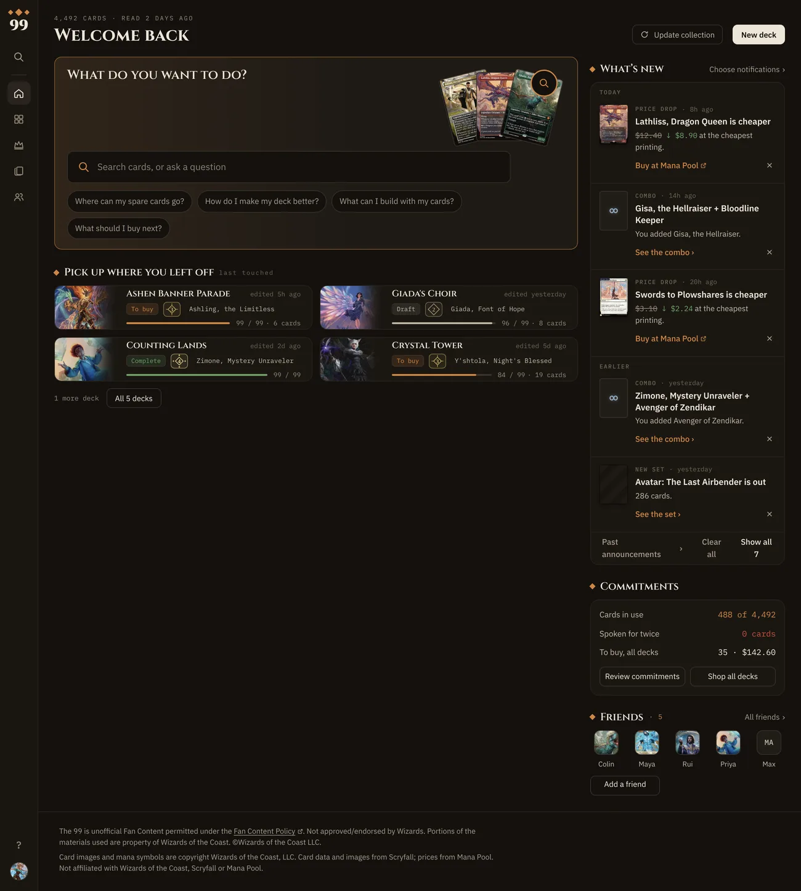
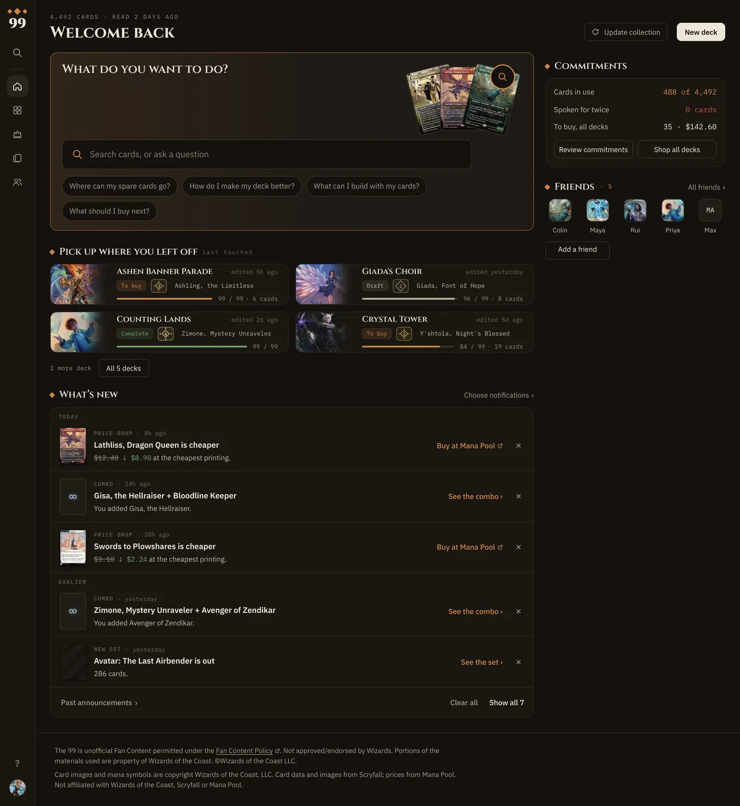
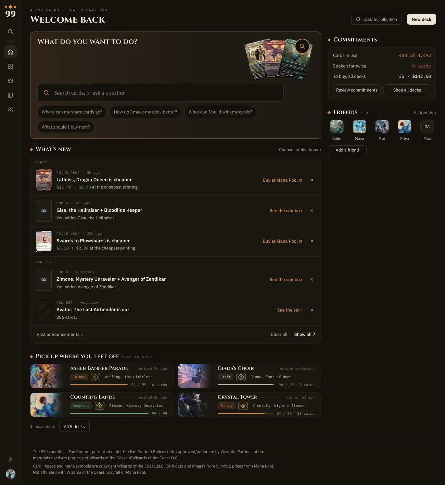
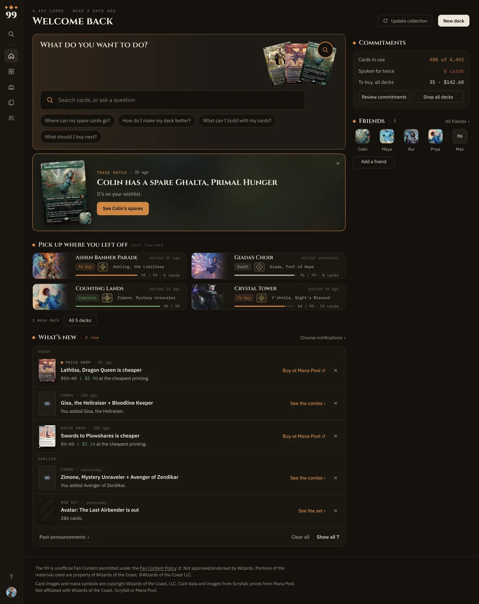
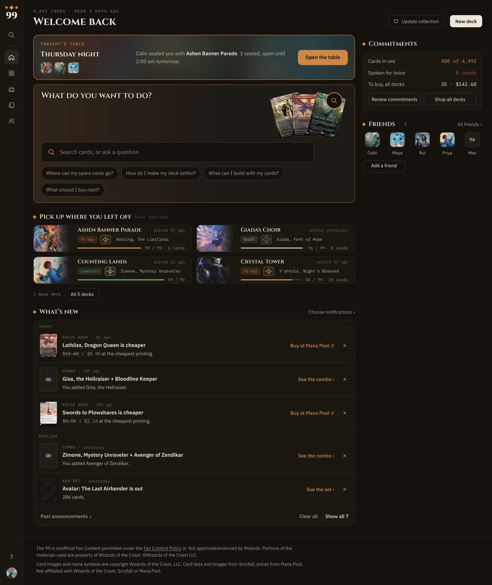
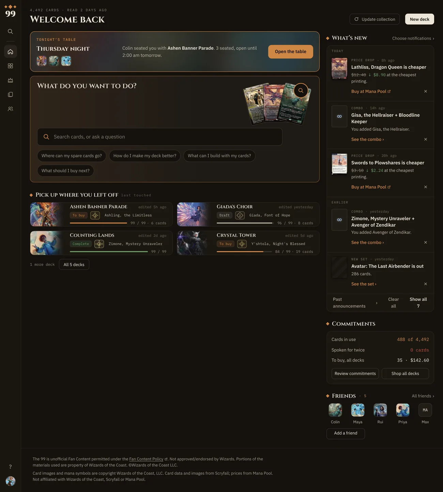
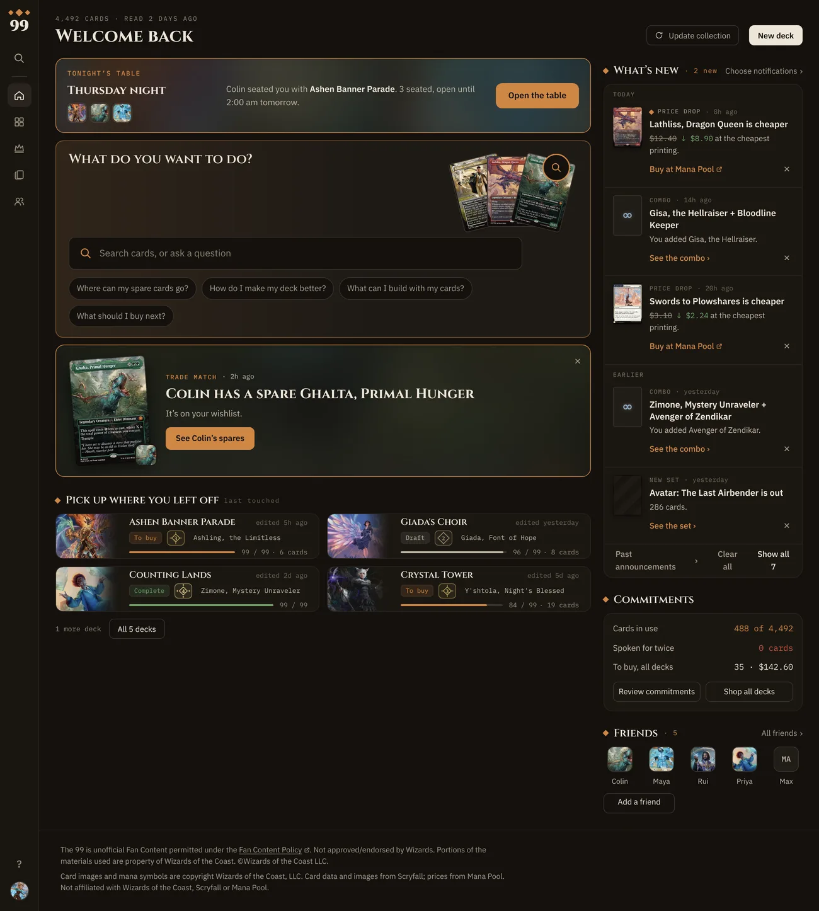
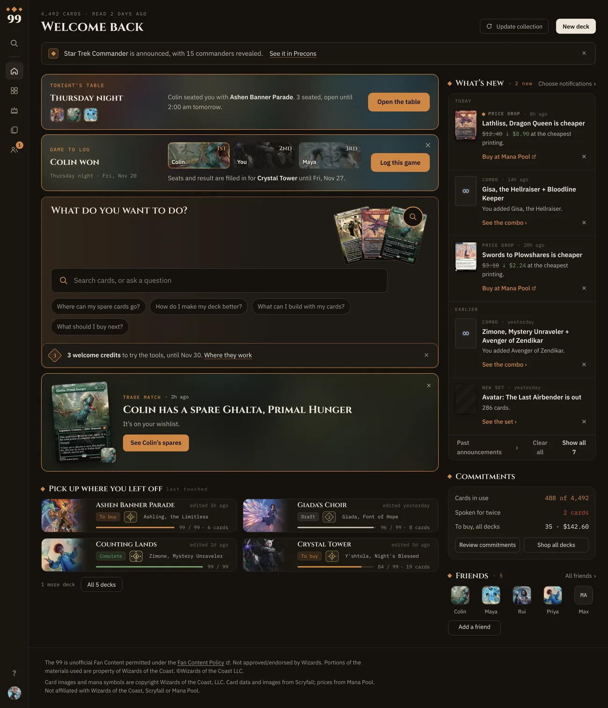

The same reader on four kinds of day. Rail 316px, main column the rest, as shipped.

Shipped
The main column ends at All 5 decks; the rail runs on to Friends.

Proposed (Q1 A, recommended)
What's new under the decks in wide rows, its foot on one line. The rail is Commitments and Friends. The page is 30px shorter.

Q1 B
What's new above the decks, the one-column order. The decks start about 460px lower, under the fold at 900.

Lead only · main column
One card heads the column, so it still counts as quiet. The lead sits above the decks as shipped; the rest of the news follows them.

Table only · main column (Q2 A)
One card, still quiet: the table on top, What's new under the decks.

Table only · rail (Q2 B)
If any one card kept the rail, a table alone leaves the same hole under the decks.

Table and lead · rail
Two cards: the columns end within about 220px of each other, so What's new keeps the top of the rail (R8).

Busy day · unchanged
Banner, table, game to log, credits, lead. Pixel for pixel the shipped Home.